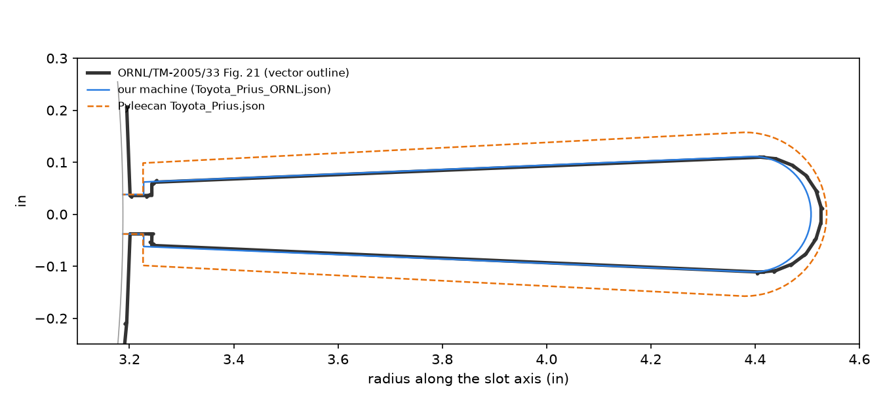
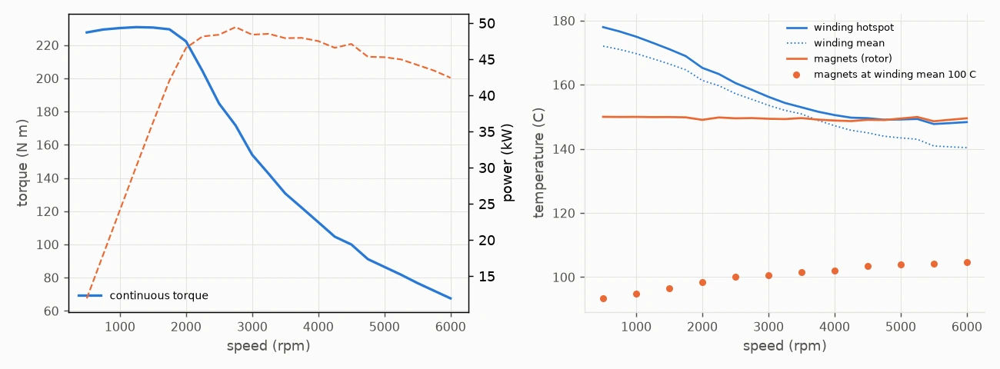
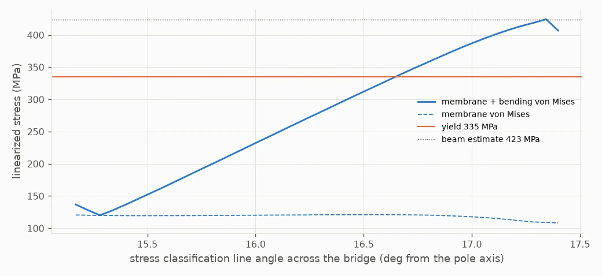

The question
Can an open-source toolchain predict a production traction motor well enough for early design screening? The test case is the 2004 Toyota Prius motor: 48 slots, 8 poles, magnets buried in the rotor in a V, rated 50 kW and 400 N m. Oak Ridge National Laboratory took one apart, drew it and measured it, and published the results.
Two kinds of answer are kept apart. Design checks come from my models alone: does the rated torque fit inside the copper's current limit, does the rated power hold to top speed, does the rotor survive overspeed, how much can the motor deliver continuously, and what happens if the inverter stops switching at top speed? Validation is a comparison with the laboratory's measurements, done once, at the end, against limits agreed before any data was seen.
The answer
The model is complete, and it gives a mixed design verdict: three limits met, three not.
What passes. The rated 400 N m needs about 168 A, 19.8 A/mm² of copper against a 25 A/mm² limit. The rated 50 kW holds from base speed all the way to 6,000 rpm: 58.6 kW at the worst speed with the motor cold. And from 1,250 to 6,000 rpm the motor can deliver at least 30 kW continuously within its temperature limits.
What doesn't, and a design review would want to know about each. If the inverter stops switching at top speed, the magnets alone drive about 1,040 V against the 500 V supply, so the drive depends on the inverter holding the voltage down. At the standard 20 % overspeed, 7,200 rpm, the thin steel bridges that hold the magnets reach 424 MPa against the stand-in steel's 335 MPa yield. And above 212 A the copper is past its current-density limit, so the top of the torque curve is a short-time rating.
The predictions are written down, and the test data is still sealed. Back-EMF 110.9 V per 1,000 rpm. Torque from 119 N m at 50 A to 606 N m at 350 A. An efficiency map peaking at 97.4 %. Each was recorded before any of the laboratory's measurements was opened. The comparison is the last step and hasn't been run yet, so until it has, these are predictions and not validated results.
Why it matters
Every other study on this site checks a model against theory: an exact solution, a handbook value, a conservation law. That shows the equations were solved correctly. It doesn't show the model matches a real machine, with real materials, tolerances and everything the model leaves out. Only measured data can do that, and it's what a client ultimately cares about.
Comparing with test data has its own trap. If you can see the answer while you build the model, it's very easy to adjust things until they agree, and the agreement then proves nothing. So this study is done blind. The machine is rebuilt from the published drawings, every prediction is written into a case file and committed before its run, and the measurements stay unopened until the whole model is finished. The limits for the comparison were agreed first as well: back-EMF within 5 %, torque within 10 %, efficiency within 2 points.
It also covers three kinds of physics on one machine, which is what a real motor design needs: the electromagnetics that make the torque, the heat that limits how long it can be sustained, and the stress in a rotor spinning at thousands of rpm.
The model
- Machine
- The 2004 Toyota Prius traction motor: 48 stator slots, 8 poles, interior V-shaped permanent magnets, an 83.8 mm stack and a 0.775 mm air gap. Rated 400 N m and 50 kW, 6,000 rpm maximum.
- Geometry
- Rebuilt from Oak Ridge's dimensioned drawing, read from the vector outline in the PDF and not by eye. The bridges and magnet pockets come from the laboratory's design reports.
- Materials
- Magnets from the published material line (remanence 1.243 T at 20 °C). The lamination grade isn't published, so M330-35A stands in, with two other grades run to bracket it.
- Electromagnetics
- 2D magnetostatics in FEMM 4.2, driven by Pyleecan, over one electrical period in 48 steps. Open circuit for the back-EMF; loaded runs sweep the current angle to find the most torque per amp.
- Efficiency
- Look-up tables of torque, flux and iron loss over the plane of the two current components, 260 field solutions per magnet temperature. At each speed and torque the map uses the current with the least loss that a 500 V supply can drive. Motor only: copper and iron loss.
- Rotor stress
- CalculiX, plane stress, half a pole at 7,200 rpm, with the magnets' centrifugal load on their seats. Stress is linearised across the 1.45 mm bridges, with elements down to 0.05 mm.
- Thermal
- A lumped network of the yoke, teeth, windings, end windings, housing and rotor, fed with the losses at its own temperatures and solved to a steady state. Limits: 180 °C at the winding hotspot and 150 °C at the magnets, with a 65 °C water jacket. The cooling and the limits are assumed, because they aren't published.
The case file: recorded assumptions, limits and inputs
This is the study's own record, written before the run and saved with it, in the shorthand of the case file.
cases/motor_prius_ornl_oc_mesh_r3.toml ↗
2004 Toyota Prius traction motor rebuilt from ORNL/TM-2005/33 Fig. 21 (radii, air gap 0.775 mm, slot, pocket thickness and position), ORNL/TM-2004/120 (bridge) and ORNL/TM-2004/137 Fig. 14 (magnet B-H line), laminations M330-35A (stand-in grade), at open circuit, 1000 rpm; Pyleecan + FEMM 4.2 magnetostatics over one electrical period (48 steps), mesh fineness 2 / 4 / 8; back-EMF and the uncontrolled-generator voltage at top speed.
Assumptions, and how each is checked
- 2D magnetostatics (FEMM), no end effects: the stack (83.8 mm) is long against the air gap (0.775 mm), but end-winding leakage and axial fringing are not modelled.
- Stator, rotor, slot and pocket thickness from ORNL/TM-2005/33 Fig. 21; bridge 1.45 mm from ORNL/TM-2004/120; magnet Br 1.243 T and recoil permeability 1.129 from ORNL/TM-2004/137 Fig. 14 (temperature not stated, taken as 20 C); magnet width and winding still Pyleecan's.
- Laminations M330-35A, a stand-in: ORNL gives the thickness (0.36 mm) but not the grade. B-H curve from Tata Steel's typical data (50 Hz) up to 1.8 T, extrapolated above (saturation polarization 2.0 T).
- Magnet temperature 20 C; Br falls about 0.1 %/K, so a hot motor has a lower back-EMF (stated, not modelled here).
- Maximum speed 6000 rpm, the commonly published rating for this motor; ORNL's design report tabulates ratings only up to base speed.
Limits
- No test data in this case: the ORNL comparison is a separate, blind step.
- The magnet fills the pocket thickness (HoleM50); TM-2004/120 gives a thinner magnet (5.31 mm), not modelled.
- Line-to-line peak from the phase flux linkages with their harmonics; the inverter's own clamping is not modelled.
- The real lamination grade is unknown; the bracketing grades (M250-35A, a high-strength rotor grade) are separate cases.
Inputs
| Input | Value |
|---|---|
| machine | Toyota_Prius_ORNL.json |
| speed_rpm | 1000 |
| id_A | 0 |
| iq_A | 0 |
| mesh_fineness | 1 |
| steps_per_period | 48 |
| angle_points | 2048 |
| max_speed_rpm | 6000 |
| bus_voltage_V | 500 |
| rated_torque_Nm | 400 |
cases/motor_prius_efficiency_r1.toml ↗
2004 Toyota Prius traction motor (our machine, laminations M330-35A), motor-only efficiency map from the verified dq look-up tables (25 A tables merged with low-q-current tables at 6.25 A): 500-6000 rpm, 10-400 N m, least copper + iron loss under the 500 V bus voltage limit and the current limit; cold (all 20 C) and hot (windings 100 C, magnets 80 C) scenarios.
Assumptions, and how each is checked
- Motor-only efficiency: copper (DC resistance, end connections included) and iron loss; no mechanical, magnet eddy-current, AC copper or inverter loss (user's framing, 2026-11-22).
- Voltage limit Vdc / sqrt 6 phase rms (linear modulation of a 500 V bus); the resistive drop is included, inductive coupling to the inverter is not.
- Current limit 212 A rms for the design (25 A/mm^2 on 76.4 mm^2 of bare copper per slot, a stated assumption) and 300 A for the map's edge.
- Iron loss from the table's coefficients, P = A f + B f^2 + C f^1.5 with f the electrical frequency, at each grid point.
- Copper 1.72e-8 ohm m at 20 C, alpha 0.00393 /K; one parallel path; end connection 120.6 mm per side (geometry estimate, see header).
Limits
- No test data in this case: the ORNL comparison is a separate, blind step at the end of the study.
- The tables are 2D magnetostatic at 1000 rpm; the iron loss is scaled to speed by the fitted coefficients, not recomputed per speed.
- Steady thermal corners only (cold and hot); no thermal model links temperature to the operating point yet.
Inputs
| Input | Value |
|---|---|
| lut_run | 20261122-102002_motor_prius_lut_cold,20261122-133946_motor_prius_lut_cold_lowiq |
| magnet_temperature_C | 20 |
| winding_temperature_C | 20 |
| series_turns_per_phase | 72 |
| turn_copper_area_mm2 | 8.492 |
| stack_length_m | 0.08382 |
| end_connection_length_m | 0.1206 |
| copper_resistivity_20C_ohm_m | 1.72e-08 |
| copper_alpha_per_K | 0.00393 |
| bus_voltage_V | 500 |
| current_limit_design_A | 212 |
| current_limit_map_A | 300 |
| speed_min_rpm | 500 |
| speed_max_rpm | 6000 |
| speed_step_rpm | 250 |
| torque_min_Nm | 10 |
| torque_max_Nm | 400 |
| torque_step_Nm | 10 |
| rated_power_kW | 50 |
| rated_torque_Nm | 400 |
| ref_back_emf_V | 111.006 |
| ref_mtpa_100A_Nm | 251.6 |
| ref_mtpa_200A_Nm | 456.9 |
How it works
The machine. Pyleecan, the open-source motor design library, ships a model of this motor. Rebuilt from the laboratory's own drawing, the real slot turns out to be 145 mm² and not 218, and the air gap 0.775 mm and not 0.750. So the study uses its own machine definition, and the figure below shows the difference.

Electromagnetics. FEMM solves the magnetic field in a cross-section of the motor at each rotor position. With no current, the changing flux through the windings gives the back-EMF, the voltage the spinning magnets generate. With current, the model sweeps the angle between the current and the magnets to find the most torque for each current level.
Efficiency. Solving the field for every speed and torque would take too long, so the field is solved once over a grid of currents and stored as tables. For each point on the map, a search then finds the current that makes the requested torque with the least copper and iron loss while staying inside the voltage the supply can provide. Above base speed that means spending some current to weaken the magnets' field, which is how these motors reach high speed.
Rotor. The magnets sit in pockets, held in by thin bridges of steel at the rotor's edge. At speed, the magnets and the steel outside them pull outward on those bridges. The stress is linearised through each bridge, the same method as the pressure vessel in study 18, so the sharp pocket corners don't decide the answer.
Thermal. The motor is divided into lumps (yoke, teeth, winding, end windings, housing, rotor) connected by thermal resistances worked out from the geometry. The losses depend on temperature (hot copper has more resistance, hot magnets make less flux), so the network and the losses are solved together until they agree. The continuous rating at each speed is the largest torque that keeps both the winding and the magnets within their limits.


How I checked it
These are checks inside the model, before any test data.
- Independent routes to the same number. A power balance (the electrical power going in against torque times speed) checks FEMM's torque to 0.1 to 0.4 %. Winding theory checks the flux linking the coils to 0.3 to 0.6 %. The efficiency tables reproduce the separate back-EMF and torque studies to 2.7 × 10⁻⁶ and 0.2 %.
- The rotor method on an exact case. A plain spinning disc, which has an exact solution, comes out right to 4 × 10⁻⁴ through the same pipeline.
- The thermal network against a field model. A CalculiX heat-conduction model of half a slot pitch, with the same losses and boundaries, agrees on the winding mean within 3 to 6 %, the teeth within 2 to 5 % and the yoke within 2 %. The slot hotspot is 4 to 7 % low, which is discussed below.
- Mesh studies on every quantity, with the coarsest mesh dropped where it left the thin bridges less than one element thick.
- Sensitivity to what isn't published. Three lamination grades move the back-EMF by 0.13 % and the torque by under 2 %. The unmeasured top end of the steel's magnetisation curve moves the high-current torque by about 2 %. Both are far inside the 5 % and 10 % limits for the comparison, so neither unknown will decide it.
What I caught along the way
- A copper area 1.57 times too large. The laboratory quotes a slot fill of 0.84, and my first version applied it to the whole slot. Re-reading the definition, it's the fill of the squares around the insulated wires. The bare copper is about 0.59 of the slot, so the current-density limit is 212 A and not 333 A. The torques didn't change, but two verdicts did: the rated-torque margin fell from 52 % to 19 %, and the torque curve now fails above 212 A. Caught and corrected before any test data was seen.
- A library model that wasn't the motor it was named after. The library's slot is half as large again as the drawing's. The drawing itself turned out to be stretched 1.1 % in one direction, and was corrected before use.
- An efficiency map that looked finished. The first map passed its spot checks but failed its interpolation check, all on one row of the table. At light load and high speed the best operating point used 2 to 5 A of torque-producing current, inside the table's first 25 A cell, and the map there moved by up to 10 points with the table spacing. Finer rows at low current fixed it everywhere from 20 N m up, to under 1 point. The 10 N m row above 4,000 rpm is reported as unresolved.
- Hot magnets cost more than their rating says. At 80 °C the magnets lose 6 % of their strength, but the motor lost 7 % of its flux, because the saturated bridges keep leaking the same amount.
- A hotspot in the wrong place. The thermal network first put the slot's hottest point in the middle of the winding and read 10 % low. The field model put it at the top of the slot, by the tooth tips: the teeth carry the winding's heat out, so they're hottest at the bore. Reading the hotspot there halved the error. The remaining 4 to 7 % is the 2D detail a lumped model leaves out, and a bound shows it can't change the rating.
- The magnets, not the copper, set the continuous rating. With no heat path through the shaft and only conduction across the 0.77 mm air gap, the rotor floats at the temperature of the tooth tips, the hottest iron. A better-conducting air gap made it slightly worse, because it ties the rotor closer to those tips.
- A leak in the blind protocol, recorded and not hidden. A filter on one of the laboratory's reports let through some of its own model results, not measurements. They're logged with their time and declared in every case that followed, and extraction has been by whitelist only since.
Limits, and what I'd do next
- The comparison with the measured data hasn't happened yet. It's the next and last step: the data is opened once and every prediction is scored against the limits agreed beforehand. Until then, the predictions on this page are predictions.
- The efficiencies are motor only. Mechanical, magnet and inverter losses are left out, so they're upper bounds on what a dynamometer would measure.
- 2D magnetostatics: no end effects, no eddy currents in the magnets and no extra copper loss at high frequency.
- The lamination grade, the end-winding length and the copper temperature are estimates. Their effects are bracketed or stated.
- Thermal: steady state only, so no short-time ratings. The cooling, the insulation class and the magnet grade are assumed. The rotor's heat paths are the least checked part and they set the answer.
- The overspeed result depends on the stand-in steel. A stronger grade (M250-35A, 455 MPa typical yield) would pass.
Evidence
Run reports, with every check and the saved inputs